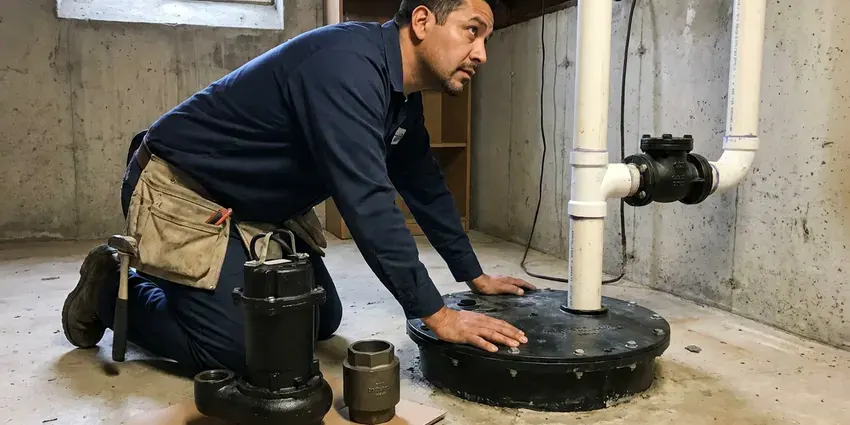

PEX Pipe Installation in Henderson, NV
PEX supply lines for repipes, remodels and additions in Henderson, NV. FMR Plumbing plans the route first, then installs and pressure tests.
- Water Back Each Evening
- Labor Warranty
- Permit Handled
- Openings Patched

PEX Repiping by FMR Plumbing in Henderson, NV
We pull the permit, run the pipe and patch the walls.
PEX Repiping in Henderson, NV
FMR Plumbing installs PEX supply lines for homeowners replacing worn copper, galvanized or polybutylene pipe. PEX bends through framing, uses fewer fittings and does not collect mineral scale the way metal pipe does. Homes around Henderson that rely on private wells should test for hardness and other minerals before installing treatment equipment. We plan the route to keep wall cuts small. Each job ends with a pressure test that runs long enough to catch a slow weep at any fitting.
Our expertise includes:
- PEX-B copper crimp and stainless cinch connections
- Whole-home repipes from main shutoff to every fixture
- Oxygen-barrier PEX for hydronic heat

Additional Plumbing Installation Services in Henderson, NV
We install water heaters, pumps, lines, and fixtures across Henderson, NV with precision workmanship that meets every local code.


Customers
Why Choose FMR Plumbing for PEX Pipe Installation in Henderson, NV?
Every PEX job gets pressure tested with the walls still open. The gauge tells the story. If a crimp ring sits crooked or an expansion fitting did not seat fully, the test shows it while the joint is still reachable instead of after the paint dries.
- Long Warranties, Manufacturers back matched systems for 25 years or more.
- Home-Run Option, Each fixture can get its own line off a manifold and its own shutoff.
- Lower Install Cost, PEX costs less per foot than copper and takes fewer labor hours.
Citywide Coverage
From 1970s ranch houses with galvanized lines to 1990s builds with gray poly, we repipe homes all over Henderson. Ranch houses usually route easily through a roomy attic, while two-story homes need careful planning to reach the upstairs bath without opening finished ceilings below. We plan it before cutting.
Experienced Team
Every plumber at FMR Plumbing can handle anything from a single fitting to a whole house. Someone who repairs a manifold valve one day may run a four-day repipe the next week, so they understand the full system, not just one part. It shows on tricky calls.
Safety-First Approach
Code compliance starts at the rough-in. We follow the plumbing code adopted in Henderson and Nevada, from support spacing and framing protection to the open-wall pressure test the inspector expects. It passes inspection.
Trusted Certified Henderson Plumbing Services Professionals
At FMR Plumbing, we are proud to offer certified plumbing services throughout Henderson, NV. Those papers on the wall mean something. Every repair, install and maintenance visit follows strict safety and quality rules, and the plumbers doing the work carry recognized industry credentials.
Call Us Now PHCC Plumbing Contractor Recognition
PHCC Plumbing Contractor Recognition Better Business Bureau (BBB) Accreditation
Better Business Bureau (BBB) Accreditation Angi Certified Pro
Angi Certified Pro ISO 9001 Quality Management Certification
ISO 9001 Quality Management CertificationWhat Goes Into a PEX Install in Henderson, NV
Leak Repair with PEX in Henderson, NV
A single bad section does not always mean a repipe. For one split or pitted stretch of copper, we cut it out, transition to PEX with a listed fitting, and usually restore water within a couple of hours. It is fine for an isolated leak. Once you are on the third patch, we will tell you straight whether the rest of the copper is heading the same way.

PEX for Remodels & Additions in Henderson, NV
Opening a wall for a kitchen remodel is the cheapest time to swap out the old pipe. While the studs are exposed we can run PEX back to a manifold or a sound trunk, set fresh stub-outs for the sink and dishwasher, and add a fridge line. An addition gets sized on its own. A new bath at the far end of the house may need a three-quarter inch feed to keep pressure up.
Commercial PEX Pipe Solutions in Henderson, NV
Apartment buildings, small offices and churches in Henderson, NV are good candidates for PEX as much as houses can. Each unit can get its own manifold and shutoff, so a leak in one apartment shuts down one apartment instead of the whole stack. Rated walls need firestopping. Every penetration through a fire-rated wall gets a listed firestop sleeve or sealant.
PEX for Water Line Replacement in Henderson
Your service line runs from the meter or well to the house, often a foot and a half to three feet underground. A PEX main comes off a coil in one piece, so there are no buried joints between the meter and the foundation wall. Caliche, expansive clay and rocky desert soil are common in Nevada, and caliche can make digging for sewer lines slow and costly. We bed it in sand. Rock pressing on the pipe is the usual cause of an early failure.
Commercial PEX Pipe Installation in Henderson
Commercial PEX work in Henderson runs on the business schedule, not ours. For a small office, a restaurant restroom or a retail tenant space, we can stage the work after closing so the water is only off when nobody needs it. Bigger sizes join the same way. Bigger buildings often need one-inch and larger trunks plus commercial manifolds.
Whole-Home PEX Repiping in Henderson
Low pressure at every faucet, across the whole house, usually points at the pipe and not the fixtures. In an older house that usually means rust-choked galvanized or polybutylene with tired fittings, and a new faucet cartridge will not touch it. A whole-home repipe will. We replace every supply line from the main valve to each angle stop and test the system before closing anything.
PEX-A Expansion Fitting Systems in Henderson, NV
With PEX-A, the tech slips a ring over the pipe end and stretches both with a battery tool. The fitting is pushed in while the pipe is open, and the plastic's memory shrinks it back around the barb, sealing tighter during the first minute. Cold weather slows it. We let joints set before testing.

Emergency PEX Pipe Repair & Installation in Henderson, NV
PEX rarely fails on its own. Most failures trace back to a nail or screw through the pipe, a rodent working on an attic run, or a fitting that was not crimped fully. We carry the common sizes. Most emergency PEX repairs in Henderson, NV are a cut-and-splice job that takes under an hour once the drywall is open.
Nearby PEX Repiping in Henderson, NV
Searching for a PEX plumber nearby in Henderson usually means something already leaked. FMR Plumbing works out of the area, so an estimate can often happen within a day or two of your call, and the crew that quotes the job is the crew that does it. Nobody subcontracts it. One lead plumber stays on your job from the estimate through the final test.
Being close by means short drives for small jobs. A dripping fitting under the sink, a stuck manifold valve or an attic line that split overnight in the cold are all things we can often reach the same day in Henderson. The trucks carry fittings. Half-inch through one-inch, both expansion and crimp.
FMR Plumbing at a Glance
- Licensed and insured plumbers serving Henderson, NV
- Same-day appointments and 24/7 emergency response
- Upfront, flat-rate pricing before work begins
- 4.8-star rated by 903+ Nevada customers
Henderson Map
Henderson Information
- Population
- 337,305
- Area codes
- 702/725/775
- Service area
- Henderson and communities within 40 miles
- Nearby
- Whitney, Paradise, Winchester, Enterprise
Long runs with fewer joints and no corrosion to speak of make PEX the usual pick for Henderson, NV homes replacing copper, galvanized or polybutylene.
Talk to a Plumber
Call FMR Plumbing for reliable plumbing work done by licensed pros in Henderson, NV.
Our Specialized Plumbing Services in Henderson, NV
At FMR Plumbing, you get every kind of plumbing service from one company across Henderson, NV. From leak detection to full system installs, our team works fast and charges fair prices on homes and commercial properties alike. Here are the core services we offer:


How We Handle a PEX Repipe in Henderson, NV
A short, three-step process: estimate, install, test and patch.
Request a Quote
Call (725) 360-1766 or use the form to set up a visit. Expect a few quick questions about your home.
Assess and Plan
In your Henderson home, we look at the current pipe and plan the route. Access points get marked before any cutting.
Install and Test
We run the PEX, make every connection and hold a pressure test. A bad joint shows while the wall is open.
Frequently Asked Questions About PEX Pipe Installation in Henderson
Most whole-home PEX repipes in Henderson, NV fall in the $3,000 to $10,000 range. Smaller work, such as a line for a new bath or swapping out one bad section, usually costs $500 to $2,000 depending on access. Every price is in writing. Permit and patching are included unless the quote says they are not.
Low pressure at every tap, rust-tinted water after the lines sit, and a third or fourth leak in a few years. Gray polybutylene pipe or old galvanized steel in the house is a sign on its own, even before anything has leaked, because both are known to fail with age. A quick look tells us.
Buried, yes. Exposed to the sun, no. UV light breaks down PEX within months, so above-ground runs need to be sleeved, painted over a listed sleeve or kept inside a wall or enclosure.
Probably not on a whole house. Proper sizing, support spacing and code compliance all get inspected, and a mistake behind a wall can mean hidden leaks and a failed inspection.
Fifty years is what most makers rate it for, and many installs should outlast that when kept out of sunlight and away from heat.
Installed right, several decades at least. Manufacturers commonly offer 25-year warranties when their pipe and fittings are used together.
Small repairs, possibly, if you buy the right tool and a go/no-go gauge. Repiping a whole house is another matter, since sizing, support spacing, nail plates and the test all have to meet code and the inspector checks each one. Bad joints hide behind drywall.
On a single repair, some handy homeowners do. For a full repipe or a water main, the tools, techniques and code rules add up quickly, and a missed crimp or an unsupported run can lead to water damage that costs far more than the labor you saved. Hidden leaks are the cost.
What People Are Saying About Our Plumbing Experts?

Daniel K.
A pipe burst in the garage ceiling at 11 at night. Someone answered on the second ring, and the plumber was in my driveway about fifty minutes later. He shut off the main, cut out the split section, and had water back on before 2 am.
Emergency Plumbing · Spring Valley, NV
Kevin O.
Before buying our house I paid for a sewer camera inspection. FMR Plumbing found a belly in the line that held standing water about forty feet from the cleanout. We used the video to get the sellers to fix it before closing.
Sewer Camera Inspection · Winchester, NVTyler J.
We bought a taller comfort height toilet for my dad, who just had knee surgery. The plumber pulled the old one, found the flange was cracked, and replaced it before setting the new bowl. Took about two hours.
Toilet Installation · Enterprise, NV
Emily R.
The shutoff valve under our kitchen sink snapped off in my hand on a Sunday morning. FMR Plumbing had someone out by early afternoon. He replaced both angle stops with quarter turn valves and showed me where our main shutoff was, which I honestly did not know.
Plumbing Repair · Winchester, NVLisa C.
Water was pouring out from under the washing machine on a holiday weekend. FMR Plumbing talked me through closing the valves over the phone and had a plumber at the house within ninety minutes. It was a burst fill hose.
Emergency Plumbing · Spring Valley, NVMegan L.
Our upstairs tub drained so slowly that every shower turned into a bath. FMR Plumbing pulled a wad of hair out of the stopper and then snaked the line past the trap. Three months later it still drains fast.
Drain Cleaning · Spring Valley, NV